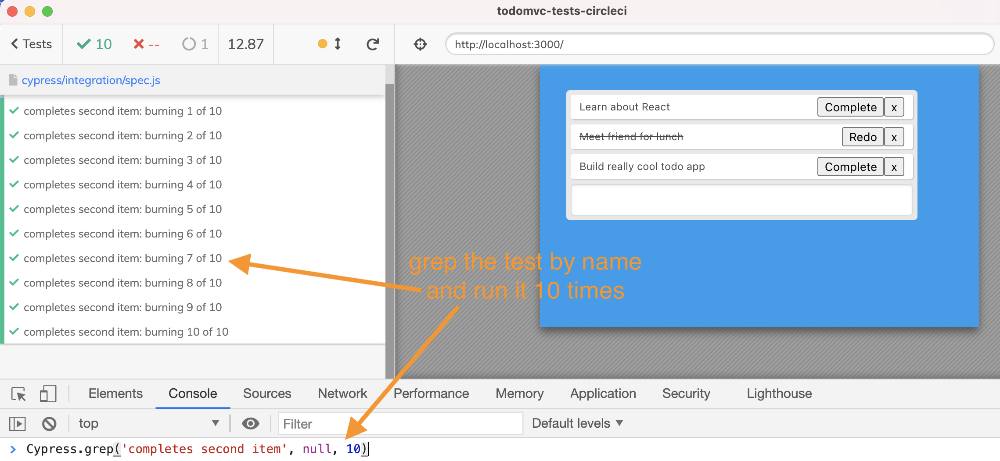
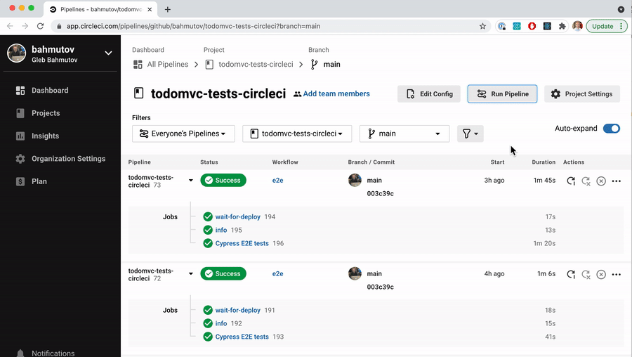
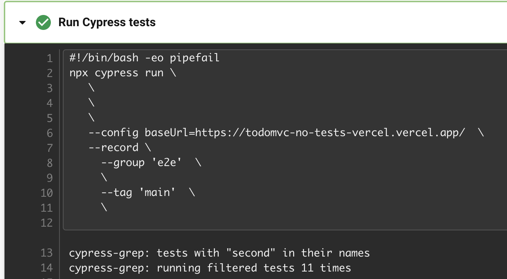
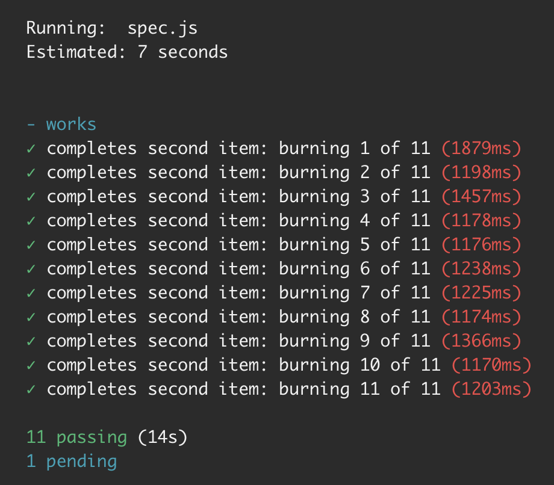
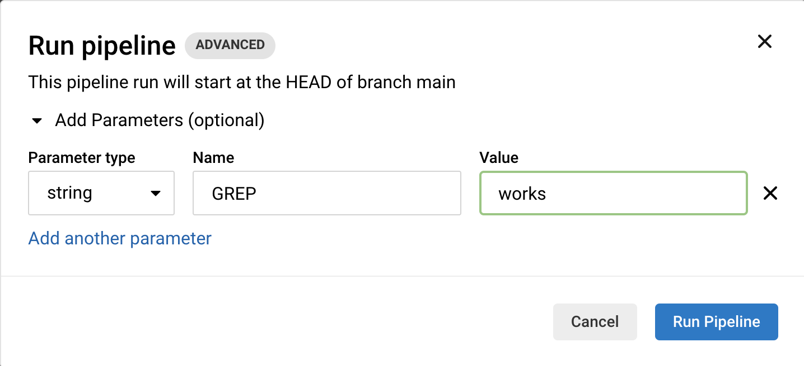
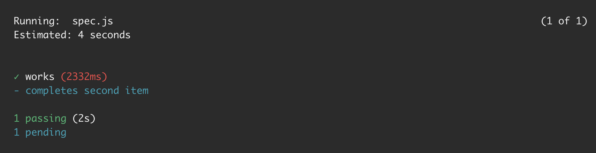

Sometimes you add a new end-to-end test and ask yourself: "Is this test flake-free? Is it reliable?" If a new test is unreliable, you are bound to break other people's test runs. One way to determine if a test is robust, is to run it multiple times in a row. If the tests are all green, the test is good to go.
📺 If you would rather watch the explanation from this blog post, watch it here and subscribe to my YouTube channel.
Cypress can run a single test on demand using the cypress-grep plugin. For example, from the browser's DevTools Console we can execute the method Cypress.grep(<name of the test>, null, 10) to run a single test ten times in a row.

You can grep the tests to run by title and run them N times in a row using Cypress headless mode. Pass the title and the burn number using --env ... argument. To execute the same test five times in a row:
1 | $ npx cypress run --env grep='completes second',burn=5 |
There is another way to pass the environment variables besides --env argument. You can pass the values using the environment variables prefixed with CYPRESS_ string. The command below is equivalent to the one above:
1 | $ CYPRESS_grep='completes second' CYPRESS_burn=5 npx cypress run |
Sometimes we are not sure if a test is flaky or not when running it on a Continuous Integration (CI) server. If you are using a CircleCI to run Cypress tests, here is the way to be able to grep and burn a single test on demand.
🎁 You can find the full source code in the repo bahmutov/todomvc-tests-circleci.
Take your workflow that uses Cypress CircleCI Orb. It has a cypress/run job.
1 | # to use orbs, must use version >= 2.1 |
We need to pass parameters to this workflow when launching it. We can use the pipeline parameters for this. Let's add a top-level section to the file.
1 | parameters: |
Before the cypress/run launches the Bash shell to execute npx cypress run we need to export the CYPRESS_grep and CYPRESS_burn environment variables. We can use the post-checkout option in the cypress/run job to do so, following the CircleCI env documentation. We can put the values from the pipeline parameters using a special CircleCI syntax:
1 | workflows: |
By default, the grep value is an empty string, thus all tests run once. But if we want to run just the second test to really stress-test it, we can launch the pipeline through the CircleCI web app.

Tip: switch to the desired branch before running the pipeline if needed.
The pipeline parameters are exported as the environment variables for Cypress to read and pass to the plugin. The test "completes second item" then runs by itself 11 times.


Alternative: pass the environment variables as command prefix
Cypress CircleCI Orb allows you to define a command prefix that is concatenated with the full cypress run ... command formed by the orb itself. We can use this method to avoid the variable export step.
1 | workflows: |
Best alternative: use Cypress orb env parameter
I have added env: ... parameter to Cypress orb, released as v1.29.0 (see issue #355, PR #358), so now you can pass the burn parameter very simply.
1 | workflows: |
Run a single test once
If you only provide the GREP parameter, without BURN, then the selected test(s) will run once. For example, let's run the test with "works" in the title.

Click the "Run Pipeline" button and observe only the selected test run.
